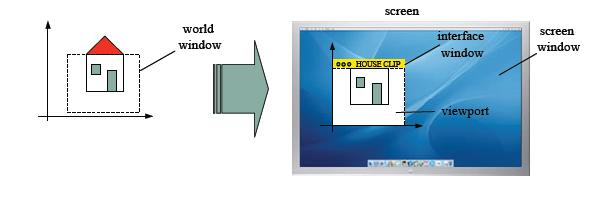
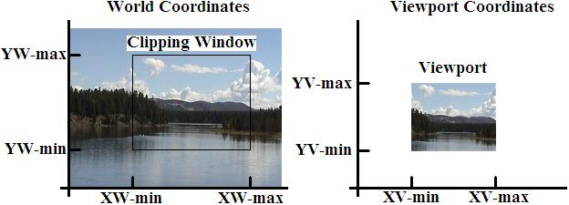
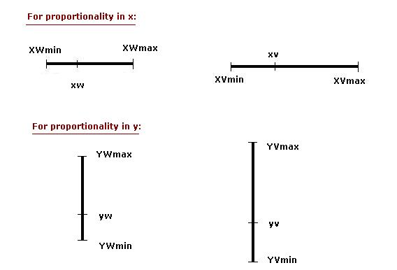
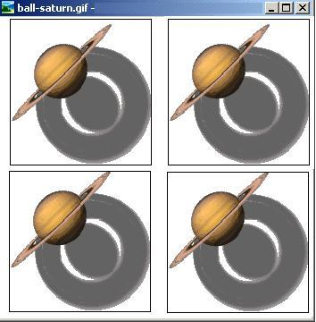
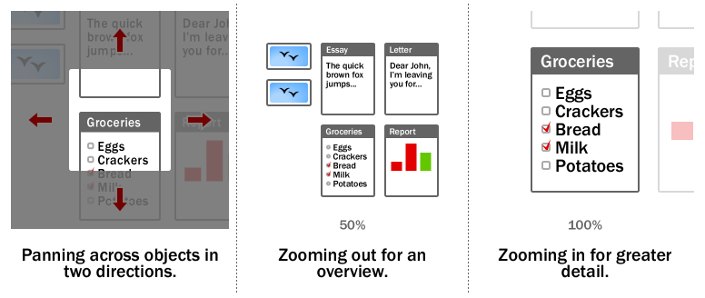

Definitions
World Coordinate System - This is object space or the space in which the application model is defined.
Screen Coordinate System - The space in which the image is displayed.
Clip Coordinate (or Object Coordinate) System - This is the rectangle in the world defining the region that is to be displayed. Default to be (x: [-1, 1]; y:[-1, 1] )
Interface Window - The window opened on the raster graphics screen in which the image will be displayed. Think of it as the Canvas to draw on.
Viewport - The rectangular portion of the interface window that defines where the image will actually appear (default is the entire interface window but in some cases modified to be a portion of the interface window).
- Viewing Transformation - The process of mapping a world window in World Coordinates to the Viewport.

Description
Window-to-Viewport mapping is the process of mapping or transforming a two-dimensional, world-coordinate scene to device coordinates. In particular, objects inside the world or clipping window are mapped to the viewport. The viewport is displayed in the interface window on the screen. In other words, the clipping window is used to select the part of the scene that is to be displayed. The viewport then positions the scene on the output device.
example

Development of the Window-To-Viewport Mapping
This mapping or transformation involves developing formulas that start with a point in the world window, say (xw, yw). The formula is used to produce a corresponding point in viewport coordinates, say (xv, yv). We would like for this mapping to be "proportional" in the sense that if xw is 30% of the way from the left edge of the world window, then xv is 30% of the way from the left edge of the viewport. Similarly, if yw is 30% of the way from the bottom edge of the world window, then yv is 30% of the way from the bottom edge of the viewport. The picture below shows this proportionality.

Using this proportionality, the following ratios must be equal.
By solving these equations for the unknown viewport position (xv, yv), the following becomes true:
The scale factors (Sx, Sy) would be:
And the translation factors (Tx, Ty) would be:
The position of the viewport can be changed allowing objects to be viewed at different positions on the Interface Window. Multiple viewports can also be used to display different sections of a scene at different screen positions. Also, by changing the dimensions of the viewport, the size and proportions of the objects being displayed can be manipulated. Thus, a zooming affect can be achieved by successively mapping different dimensioned clipping windows on a fixed sized viewport.
If the aspect ratio of the world window and the viewport are different, then the image may look distorted.
WebGL Window-To-Viewport Mapping
In WebGL, the function ortho(left, right, bottom, top); is used to set up the world window. For example, if we wanted a world window with x varying from -1.0 to 1.0 and y varying from 3.0 to 5.0, we would use the following code to accomplish this:
projectMatrix=ortho(-1.0, 1.0, 3.0, 5.0);
The projectMatrix is later sent over to the vertex shader to perform the mapping computation.
To set up the viewport, we would use gl.viewport(left, bottom, width, height); For example, if we wished a viewport to start at the lower left corner of the interface window, have a width of 200 and a height of 300, we would use the following WebGL statement to accomplish this:
gl.viewport(0, 0, 200, 300);
Tiling using the Window-To-Viewport transformation
If we draw a number of copies of the same image in rows and columns across the interface window so that they cover the entire window, it is called tiling. The picture that is drawn many times is called a motif. To achieve tiling in computer graphics, the window remains static and the viewport is changed many times and the picture is redrawn each time the viewport is changed. The following picture shows the same image from the world drawn 4 times in 4 different viewports.

This can be achieved using the following code:
for (int i = 0; i < 2; i++) for (int j = 0; j < 2; j++) { gl.viewport (i * screenWidth/2.0, j * screenHeight/2.0, screenWidth/2, screenHeight/2); drawSaturn(); }Zooming or Panning Using Window-to-Viewport transformation
Zooming is a technique in which users can change the size of the area to be viewed in order to see more detail or less detail. Panning or roaming means sliding the camera across the scene, taking in different parts of it at different times. Both zooming and panning can be achieved in computer graphics by leaving the viewport static and changing the world window. The picture below (taken from wikipedia.org) shows these concepts.
